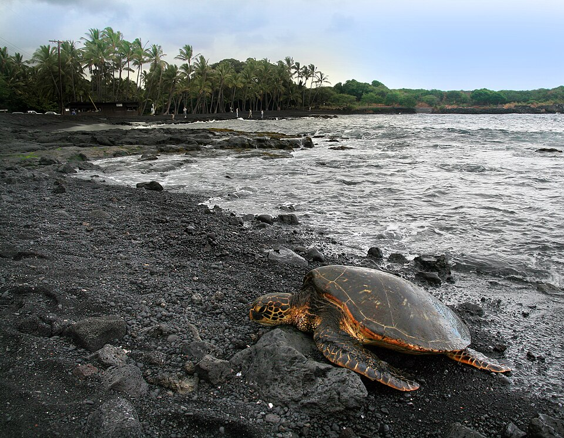

Punaluʻu Beach
Place: Punaluʻu Beach, Hawaiʻi Island
Type: Black sand beach / coastal spring system
Story it tells: A place where freshwater rises beneath the ocean, shaping both the name and experience of the shoreline.

Punaluʻu refers to freshwater springs that bubble up beneath the ocean, creating pockets of cool, slightly brackish water along the shoreline. The name is often understood as “diving spring,” recalling a time when people would dive below the surface to access fresh water during periods of drought.
These submarine springs are part of a larger coastal system where groundwater meets the sea. Even today, the mixing can be felt while swimming, as colder freshwater rises through the saltwater in shifting patches.
The beach’s black sand comes from basalt lava, broken down over time by waves and weather. Together, the springs and volcanic shoreline create a place that feels distinct not just in appearance, but in how it is experienced.
Today, Punaluʻu is one of the most accessible black sand beaches in Hawaiʻi and a common resting place for honu (Hawaiian green sea turtles) and the critically endangered honu ʻea (hawksbill sea turtle). Visitors are reminded to observe wildlife from a distance and respect posted guidance.